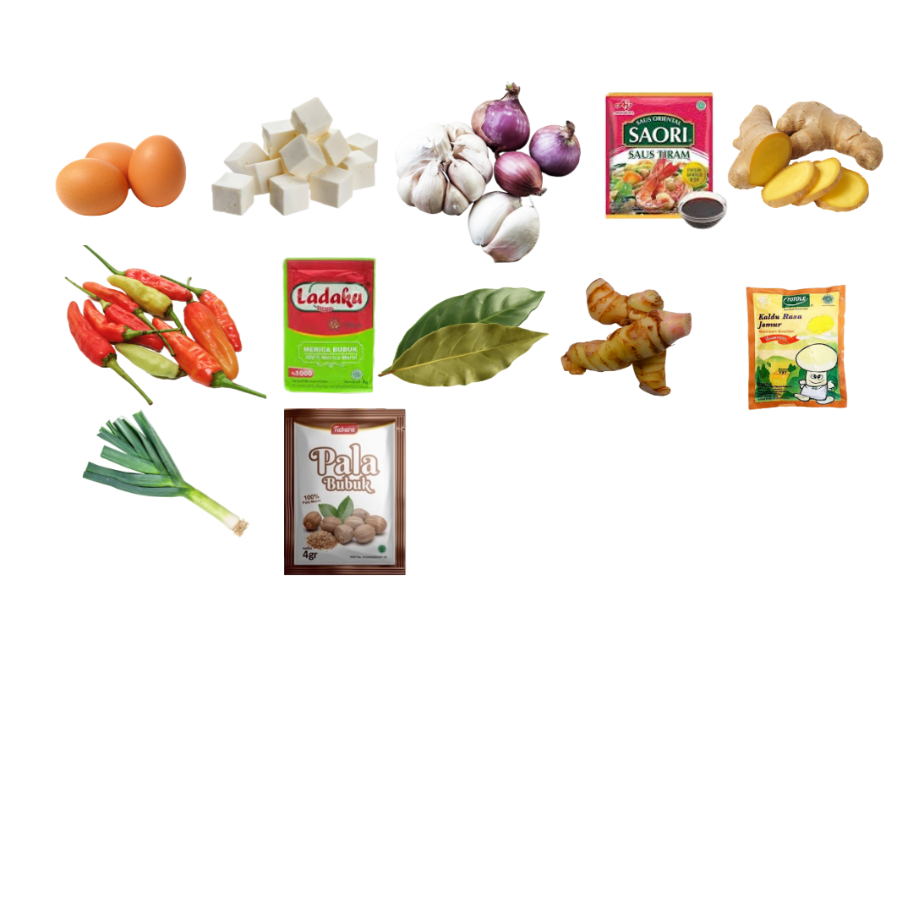

Semur Telur
Bahan:
- Telur
- Tahu
- Daun Bawang / Pre (opsional)
- Ladaku
- 1/2 sdt Pala bubuk
- 3 Daun Salam
- Lengkuas
- Kecap
- Saus Tiram
- Garam
- Kaldu Jamur
Bumbu Halus:
- 1 Jahe
- 8 Bawang Putih
- 1 Bawang Merah
- 5 Cabe Rawit

Cara Membuat:
- Rebus telur dan goreng tahu
- Copper bumbu halus, lalu tumis
- Masukkan daun salam dan lengkuas yang sudah digeprek
- Masukkan tahu dan telur. Tambahkan air secukupnya
- Tambahkan kecap, saus tiram, dan penyedap rasa sesuai selera
- Masukkan daun pre. Tunggu hingga matang